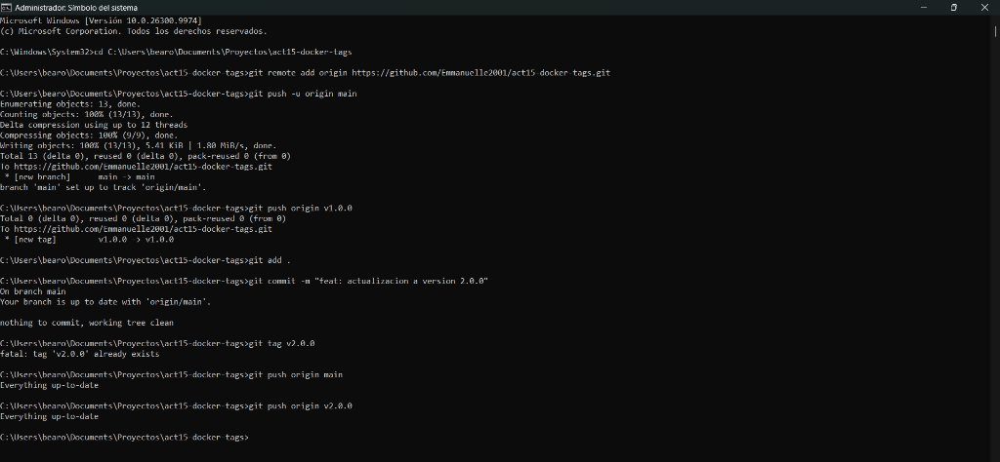
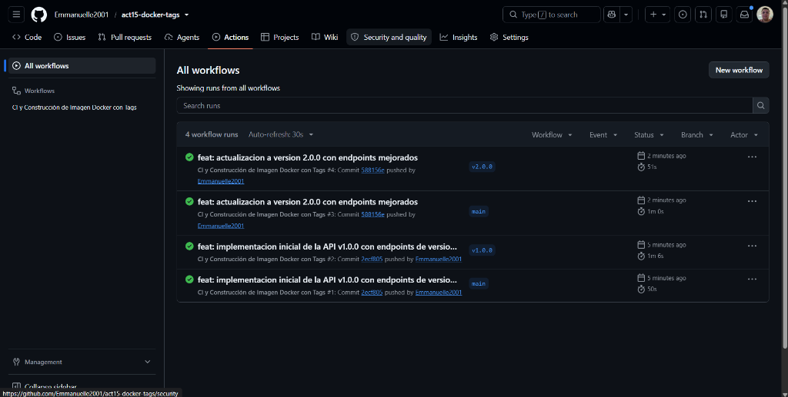
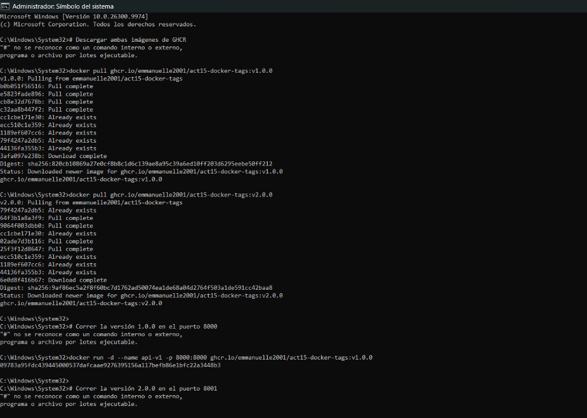
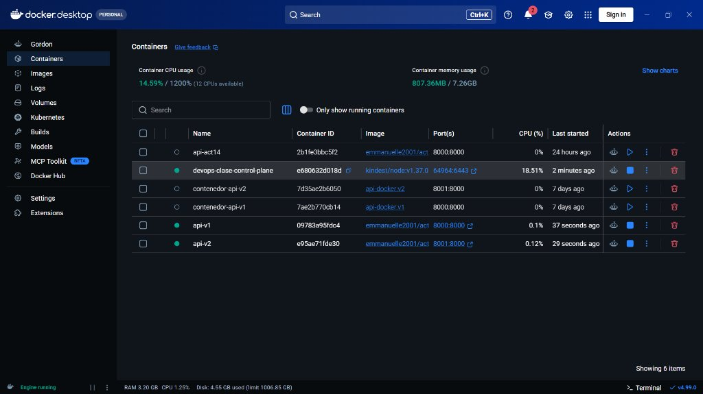
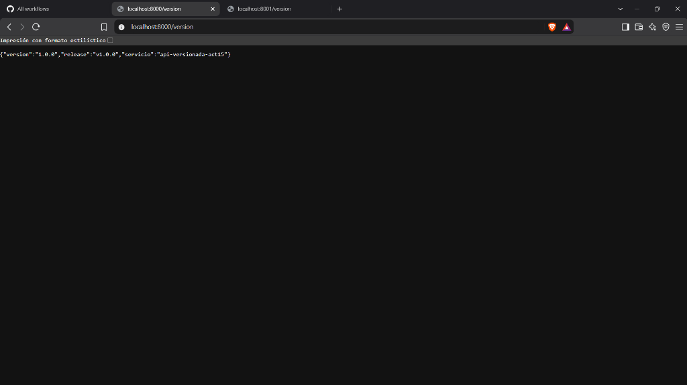
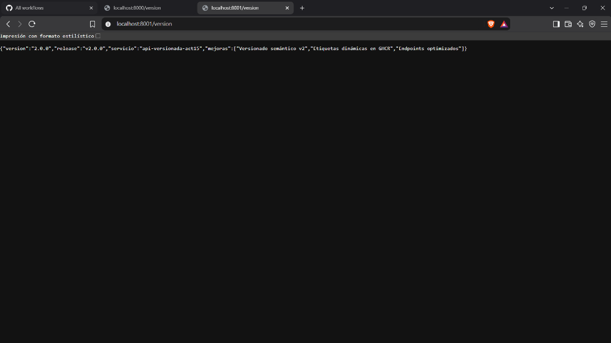

El propósito de esta práctica es implementar el versionado semántico de una API en un ciclo de integración y entrega continua (CI/CD) combinando Git Tags, GitHub Actions y GitHub Container Registry (GHCR).
A lo largo de la actividad se incorporan endpoints para consultar la versión y el estado de la aplicación, se ajusta el pipeline automatizado para etiquetar de manera dinámica las imágenes generadas mediante el paso Preparar nombre y etiquetas, y se descargan dos versiones distintas (v1.0.0 y v2.0.0) para ejecutarlas en simultáneo en Docker sobre puertos distintos, validando su coexistencia y operatividad independiente.
Se implementaron dos endpoints específicos dentro de la aplicación FastAPI para permitir la inspección externa de la versión en ejecución y la comprobación de salud del servicio:
/version: Retorna la versión del servicio y el identificador de release correspondiente./status: Confirma el estado operativo del contenedor junto con el hostname interno y timestamp.
En el flujo de trabajo de GitHub Actions se modificó el step de generación de etiquetas para extraer dinámicamente la etiqueta de versión desde la referencia de Git (GITHUB_REF_NAME), etiquetando la imagen en GHCR con la versión específica y con la etiqueta latest:
- name: Preparar nombre y etiquetas
id: image
shell: bash
run: |
IMAGE_NAME="ghcr.io/${GITHUB_REPOSITORY,,}"
TAG="${GITHUB_REF_NAME}"
echo "Generando etiquetas para: ${IMAGE_NAME} con tag: ${TAG}"
echo "tags=${IMAGE_NAME}:${TAG},${IMAGE_NAME}:latest" >> "$GITHUB_OUTPUT"Para disparar la construcción de cada versión sin alterar la rama principal, se utilizaron etiquetas de Git anotadas con el formato semántico v1.0.0 y v2.0.0:
# Etiquetar y publicar la versión 1.0.0
git tag v1.0.0
git push origin v1.0.0
# Tras actualizar el código a la versión 2.0.0
git add .
git commit -m "feat: actualizacion a version 2.0.0"
git tag v2.0.0
git push origin main
git push origin v2.0.0Se inicializó el repositorio y se publicaron las ramas y etiquetas correspondientes a las versiones v1.0.0 y v2.0.0:

El pipeline de GitHub Actions se activó automáticamente ante el push de cada tag y commit, compilando y publicando exitosamente ambas versiones de la imagen en GHCR:

Se descargaron ambas versiones desde GitHub Container Registry con docker pull y se instanciaron dos contenedores asignando el puerto 8000 para api-v1 y el puerto 8001 para api-v2:

En la consola de administración de Docker Desktop se corroboró que ambos contenedores se encuentran en estado activo y en ejecución simultánea:

Se realizó la consulta al endpoint /version en http://localhost:8000 confirmando la respuesta de la primera versión:

Se realizó la consulta al endpoint /version en http://localhost:8001 validando la respuesta de la segunda versión con las mejoras implementadas:

El uso coordinado de etiquetas de Git y registros de contenedores permite mantener una trazabilidad exacta entre el historial de código fuente y los binarios distribuidos. La ejecución simultánea de contenedores con diferentes versiones en un mismo host valida la portabilidad y aislamiento que ofrece Docker, facilitando estrategias de despliegue continuo como pruebas A/B o transiciones de versión sin interrupción de servicio.